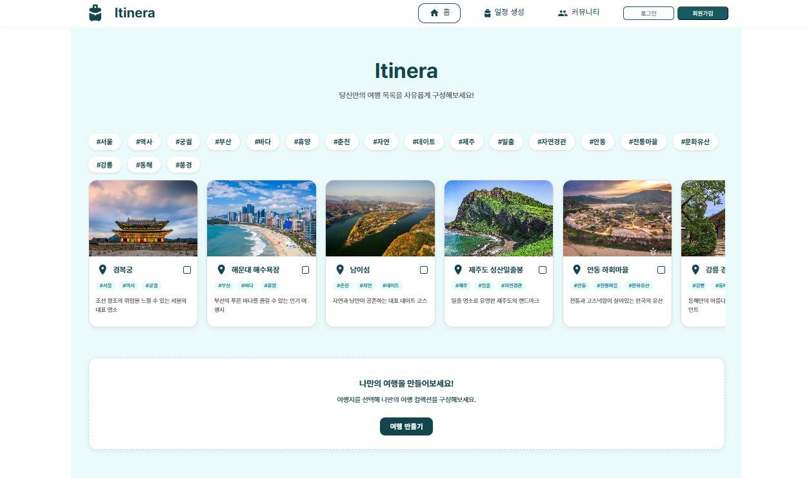
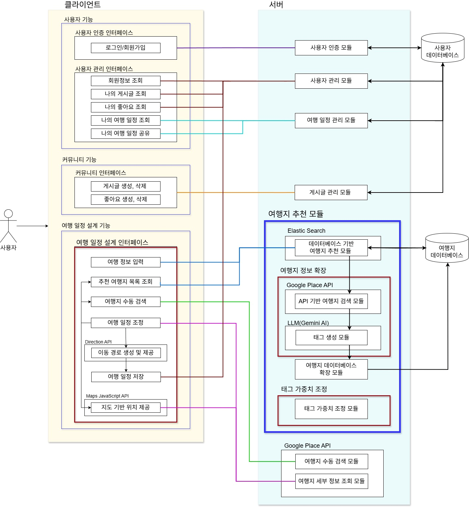
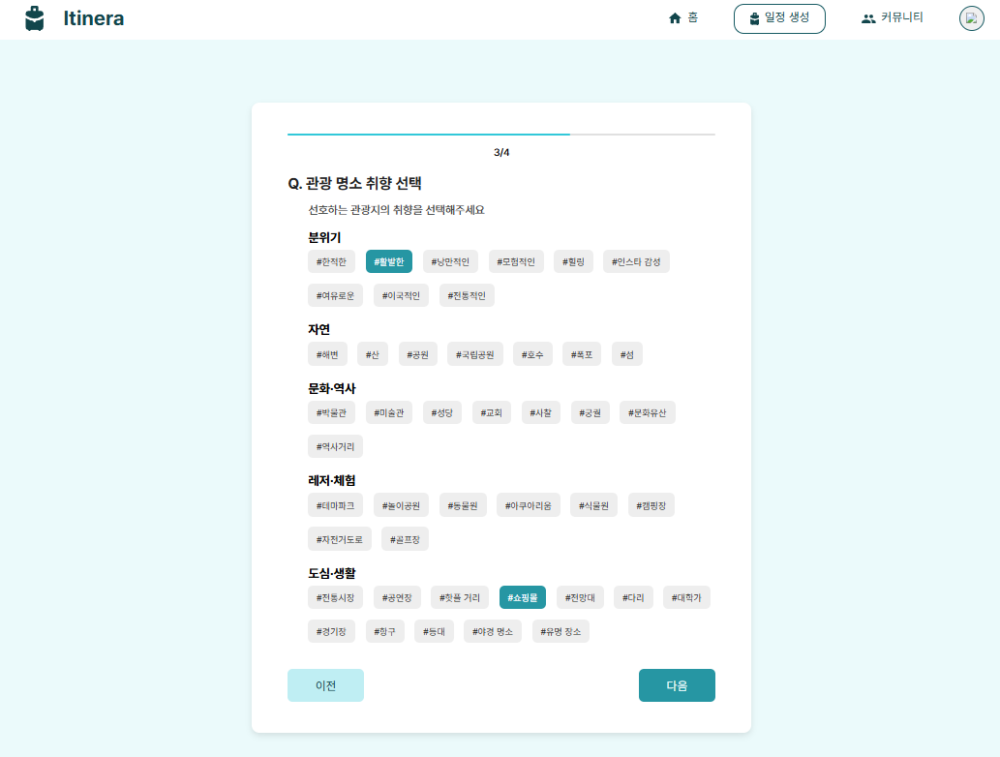
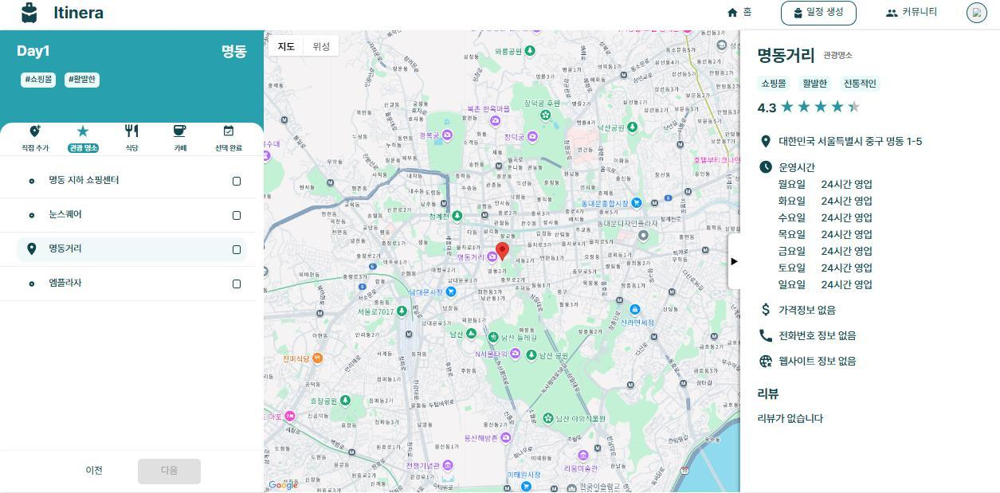
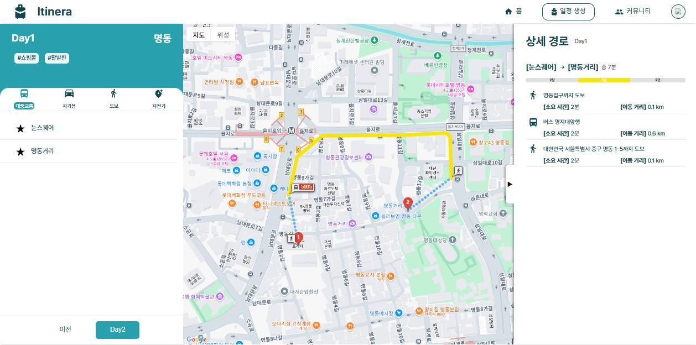

Google Places 연동
사용자의 지역과 Type·Keyword 조합을 Google Places 요청으로 변환하고, 장소 기본 정보와 상세 정보를 서비스 데이터 구조로 가공.
Personalized Travel Planning
사용자의 지역과 취향 태그를 기반으로 여행지를 추천하고, 원하는 장소를 직접 선택해 지도 위에서 일정을 구성하는 맞춤형 여행 계획 서비스.

00 / OVERVIEW
Google Places의 위치·업종 정보에 리뷰 기반 분위기 태그를 결합하고, 수집한 장소를 자체 DB와 Elasticsearch 검색 데이터로 축적했다. 사용자는 자동 생성된 일정을 그대로 수용하는 대신 추천 장소를 선택하고 순서와 경로를 직접 조정할 수 있다.
HOW IT WORKS
사용자가 여행 지역과 관광지·식당·카페의 세부 취향 태그를 선택합니다.
입력 조건을 Elasticsearch Query로 변환해 축적된 장소를 우선 검색합니다.
결과가 부족한 조건만 Google Places로 조회해 장소 정보와 리뷰를 수집합니다.
Gemini가 리뷰와 설명을 분석해 사전에 정의된 분위기 태그를 선택합니다.
정형 정보와 검색·분위기 태그를 MySQL과 Elasticsearch에 저장한 뒤 다시 검색합니다.
사용자가 장소와 방문 순서를 선택하고 경로를 계산해 일자별 일정으로 저장합니다.
01 / CONTRIBUTION
외부 장소 수집, 장소 도메인 설계, 맞춤형 추천과 일정 생성 기능을 담당했습니다.
사용자의 지역과 Type·Keyword 조합을 Google Places 요청으로 변환하고, 장소 기본 정보와 상세 정보를 서비스 데이터 구조로 가공.
장소의 위치·평점·운영시간·리뷰와 카테고리별 태그를 다루는 API 및 JPA 기반 도메인 로직 구현.
입력 지역과 취향을 기준으로 장소를 검색하고, DB에 없는 장소의 리뷰를 Gemini로 분석해 제한된 분위기 태그와 저장 구조에 연결.
사용자가 선택한 장소와 방문 순서를 일자별 Trip으로 저장하고, 지도 기반 일정 설계 기능과 백엔드 데이터를 연결.
02 / SYSTEM ARCHITECTURE
React 클라이언트와 Spring Boot API, MySQL·Elasticsearch·Redis, Google Maps Platform과 Gemini API를 기능별 모듈로 연결했다.

03 / RECOMMENDATION FLOW
앞선 전체 서비스 흐름 중 장소 추천을 위한 검색·수집·저장 과정을 백엔드 관점에서 분리했다. 추천은 학습형 모델이 아니라 사용자 취향 태그를 Elasticsearch 쿼리로 변환하는 검색 기반 방식이며, Gemini는 신규 장소의 리뷰와 설명에 제한된 분위기 태그를 부여한다.
입력 지역과 Google Places Type·Keyword, 분위기 태그를 Elasticsearch 쿼리로 변환해 카테고리별 여행지를 조회.
결과가 충분하지 않은 태그를 Type·Keyword 조합으로 변환해 Google Places Nearby Search 호출.
정형 장소 정보와 리뷰, 검색 태그 및 Gemini가 선택한 분위기 태그를 하나의 Place 정보로 구성.
새 장소를 MySQL과 검색 문서에 축적하고 동일 추천 흐름으로 돌아가 결과 목록 생성.
04 / TAG DATA DESIGN
Google Places의 범용 Type 분류만으로는 산과 바다 같은 세부 장소 유형이나 낭만적·한적한 분위기를 구분하기 어려웠다. 검색용 Type·Keyword와 제한된 분위기 태그 집합을 함께 설계했다.
DESIGN / 01
natural_feature 하나에 산과 바다가 함께 포함되는 광범위한 분류.DESIGN / 02
DESIGN / 03
05 / SERVICE FLOW
취향을 입력하고 추천 장소를 선택한 뒤, 지도에서 방문 순서와 이동 경로를 직접 조정한다.

관광지 유형과 분위기, 식당 종류, 카페 편의 요소를 카테고리별 태그로 선택한다.

추천 목록을 그대로 확정하지 않고 원하는 장소를 선택하거나 직접 검색해 일정에 추가한다.

Directions API로 장소 간 경로·거리·소요 시간을 계산하고 일자별 Trip으로 저장한다.
06 / EVALUATION
25개 지역·태그 조합으로 추천 기능을 평가했다. 조건에 맞는 결과의 품질은 높았지만, 엄격한 일치 방식 때문에 결과 자체를 반환하지 못하는 경우가 많았다.
METRIC DEFINITIONS
추천 장소가 하나도 없으면 실패로 판정했다. 태그 반영률은 성공 케이스별 ‘반영된 입력 태그 수 ÷ 입력 태그 수’의 평균이며, 분위기 적합도는 성공 결과를 팀원 4명 전원이 1–5점으로 평가한 평균이다.
태그와 정확히 일치하는 장소가 없으면 추천이 실패했다. 인기 장소 보조 추천과 유사 태그 검색이 필요하다.
일부 카페 결과는 입력 태그와 연관성이 낮았다. 데이터 보강과 카테고리별 필터링 재검토가 필요하다.
입력 지역에서 먼 장소까지 포함되는 사례가 있어 거리 반경을 사용자가 조정하는 기능이 필요하다.
07 / REVIEW
첫 팀 프로젝트인 EMUDA에서 API와 AI 응답을 하나의 서비스 흐름으로 연결했다면, Itinera에서는 외부 장소 데이터를 지속적으로 축적하고 다시 검색에 활용하는 백엔드 구조로 확장했다. Google Places 결과를 일회성 응답으로 소비하지 않고 장소 도메인과 자체 데이터로 변환하면서 데이터 모델과 API 경계의 중요성을 경험했다.
사용자 취향 입력, 장소 추천, 선택과 일정 저장으로 이어지는 기능을 구현하며 Spring Boot 기반 백엔드가 화면의 개별 기능을 넘어 서비스 전체 상태를 어떻게 유지하는지 이해했다. 특히 Google API 응답과 내부 엔티티를 분리하고 Trip 생성 흐름을 연결하면서 계층 간 DTO와 트랜잭션 경계를 구체화했다.
엄격한 태그 일치는 성공한 추천의 조건 반영률을 높였지만 전체 성공률을 낮추었다. 정답 조건을 강화하는 것만으로 좋은 추천이 완성되지 않으며, 조건 반영 정확도와 추천 성공 범위 사이의 균형을 평가해야 한다는 점을 확인했다.
분위기 태깅은 초기 OpenAI API로 구현했으나 개발 후반부에 크레딧 제약을 고려해 Gemini API로 전환했다. 최종 버전은 Gemini를 사용하며, 외부 LLM 교체 과정에서 프롬프트 입력과 제한된 태그 출력의 계약을 유지하는 방식으로 연동 구조를 정리했다.
08 / STACK